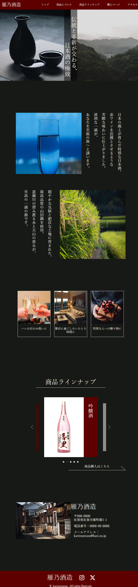

雁乃酒造（トップページのみ）
このサイトについて
- 概要
- 「香里」というブランドの日本酒をプロモーションするための架空サイトです。
- 制作期間
- 1週間
- ターゲット
- 日本酒好きの中高年
- 配色
- 落ち着いた雰囲気を演出するために黒をベースカラーにし、特別感・高級感を与えるボルドーをメインカラーとして使用しました。
- 使用ツール
- Visual Studio Code/Photoshop
- 使用言語
- HTML/CSS/JavaScript
工夫した点
- 中～高価格帯の日本酒ブランドという設定のため、全体の雰囲気を落ち着いたイメージで統一しました。
- 「商品ラインナップ」の部分にJava Scriptでスライダーを実装し、動きのあるサイトに仕上げました。